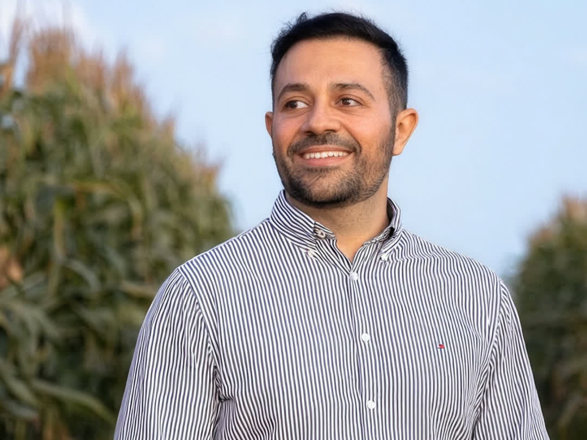

A próxima safra já está comprometida
Quando a parcela vence antes da colheita, a conta para de fechar. Crédito rural tem prazos atrelados ao ciclo agrícola e regras próprias de encargos, e nem todo encargo resiste a uma leitura rigorosa do contrato.
Crédito rural e direito bancário Defesa do produtor
Financiamentos rurais, cédulas de crédito e CPR, prorrogação e alongamento de dívida, revisão de encargos e defesa em execuções. Conteúdo informativo sobre o que o contrato do produtor realmente diz e sobre as normas que valem só para o crédito rural.
01 Quando o assunto aparece
Quase ninguém percebe a data exata. Esse ponto de virada não está no extrato: está na forma como os encargos se acumulam entre um ciclo e outro.
Quando a parcela vence antes da colheita, a conta para de fechar. Crédito rural tem prazos atrelados ao ciclo agrícola e regras próprias de encargos, e nem todo encargo resiste a uma leitura rigorosa do contrato.
A prorrogação e o alongamento de dívida rural não são favor comercial: são tratados em norma própria, no Manual de Crédito Rural e em resoluções do Conselho Monetário Nacional, com entendimento consolidado nos tribunais. A recusa tem requisitos, e requisito se discute.
Renegociar e revisar parecem a mesma coisa e são movimentos opostos. Quem renegocia aceita os números do banco e redistribui o prazo, somando encargos novos sobre um saldo que talvez já estivesse inflado. Quem revisa questiona como esse saldo foi formado.
A parcela que se enxerga é o destino. O caminho (como os juros incidem e com que frequência são capitalizados) fica nas cláusulas que ninguém lê na assinatura. Separar o custo legítimo do crédito da cobrança sem amparo depende de perícia contábil.
Entre o primeiro atraso e o bloqueio judicial existe uma janela curta. A maioria procura orientação depois da penhora, quando as alternativas já estreitaram. É no intervalo anterior que a estratégia tem mais espaço.
Hipoteca, alienação fiduciária, penhor, aval e fiança têm efeitos distintos sobre o patrimônio pessoal e o da família. Entender o alcance real de cada garantia dada muda a leitura do risco antes de qualquer proposta.
02 Frentes de atuação
Tratar crédito rural com o mesmo modelo de uma revisional de veículo ignora exatamente o que protege o produtor: a norma específica do setor.
Análise e revisão do que foi efetivamente pactuado: taxas, forma de capitalização, encargos e cláusulas que incidem sobre a produção.
A frente mais específica do crédito rural: quando a norma prevê a prorrogação, quais requisitos ela exige e o que fazer diante da recusa.
Atuação para discutir, nos autos, o título, o valor cobrado e os atos de constrição, dentro dos meios que o processo admite.
O que cada garantia dada realmente alcança, e como isso se conecta à situação registral do imóvel rural que a sustenta.

03 Prorrogação de dívida rural
O crédito rural é regido por normas próprias, o Manual de Crédito Rural e as resoluções do Conselho Monetário Nacional, que tratam da prorrogação das operações quando a capacidade de pagamento do produtor é afetada por fatores alheios à sua vontade, como intempéries e frustração de safra devidamente comprovadas.
A jurisprudência do Superior Tribunal de Justiça consolidou, na Súmula 298, que o alongamento de dívida originada de crédito rural não constitui faculdade da instituição financeira, mas direito do devedor nos termos da lei, observados os requisitos nela previstos.
Na prática, isso significa que a recusa do banco não encerra o assunto: ela abre uma discussão com critérios objetivos, que começa pela comprovação documental da dificuldade e pela leitura do que o contrato e a norma vigente à época da contratação estabelecem.
As referências normativas acima são de caráter geral e podem sofrer alteração. A norma aplicável a cada operação depende da data de contratação e das condições pactuadas.
04 Como um caso é conduzido
Nenhuma das etapas abaixo antecipa resultado: elas descrevem o método de trabalho do escritório. Dívida de valor relevante pede duas frentes ao mesmo tempo: discutir o saldo e cuidar do patrimônio enquanto isso corre.
Contrato e aditivos, cédulas, planilhas de evolução da dívida, extratos, comprovações de frustração de safra e laudos. Sem esse conjunto, qualquer diagnóstico é chute.
Taxas efetivamente pactuadas, forma e frequência de capitalização, encargos de inadimplência e aderência às normas do crédito rural. É aqui que se identifica se há divergência entre o contratado e o cobrado. Em juízo, essa avaliação depende de perícia contábil.
Havendo caminho administrativo com a instituição, ele costuma ser mais rápido e menos oneroso. Quando o pedido é recusado ou a cobrança avança, define-se a medida judicial adequada: decisão técnica, tomada à luz do prazo processual de cada caso.
Do atendimento inicial à solução, com acompanhamento direto do titular do escritório, linguagem clara e expectativas tratadas com honestidade, inclusive quando a leitura é desfavorável ao cliente.

05 Quem conduz
Advogado há 18 anos, com atuação em direito bancário rural e revisional, imobiliário urbano e rural, registral, agrário, possessório, sucessório e cível. O escritório tem sede em Curitiba/PR, filial em Londrina/PR e atua em diversos Estados do Brasil.
A formação voltada a taxa de juros bancários é o lastro desta frente. O atendimento é conduzido diretamente pelo titular, da leitura do contrato à audiência.
06 Dúvidas frequentes
Conteúdo informativo de caráter geral. Não substitui a análise do seu caso, que depende sempre dos documentos da operação.
A revisão faz sentido quando há indício de divergência entre o que foi contratado e o que vem sendo cobrado: encargos acima do pactuado, aplicação de índice diverso do previsto, descumprimento de regras do Manual de Crédito Rural ou capitalização fora do que o contrato previu — a Súmula 539 do Superior Tribunal de Justiça condiciona a capitalização em periodicidade inferior à anual à previsão expressa no contrato.
A confirmação desses pontos não se faz por leitura superficial: depende de perícia contábil sobre a evolução da dívida. Por isso a análise começa pelos documentos, e não por uma estimativa.
Há dois caminhos. O administrativo busca, junto à instituição financeira, prorrogação de prazo ou carência compatível com o ciclo da safra, com base nas normas do crédito rural. O judicial é acionado quando o pedido é recusado sem fundamento ou quando a cobrança avança.
O que se pode afirmar com segurança é que agir antes de a execução avançar amplia as alternativas disponíveis. Nenhum dos caminhos garante resultado — cada um depende do que a documentação e a norma sustentam.
De forma geral, é a cobrança que não encontra amparo no contrato, na lei ou nas normas do Conselho Monetário Nacional e do Manual de Crédito Rural. Pode envolver a forma de capitalização, a taxa aplicada, encargos de inadimplência ou a cumulação de comissões.
A caracterização é técnica e exige o confronto entre o contrato, a planilha de evolução da dívida e a norma vigente à época da contratação.
Dentro do processo, a legislação prevê meios próprios de defesa, como os embargos do executado, a impugnação à penhora e a discussão do próprio título que embasa a cobrança. Cada um tem prazo e requisitos específicos. Quando a garantia é alienação fiduciária, a busca e apreensão segue rito próprio, o do Decreto-Lei 911/1969, com etapas e prazos que não são os da execução comum.
Os prazos processuais são curtos e improrrogáveis em boa parte dos casos, o que torna a data da citação uma informação decisiva na primeira conversa.
Aval e fiança são garantias pessoais e, em regra, vinculam o patrimônio de quem as presta, com efeitos distintos entre si e também das garantias reais, como a hipoteca e a alienação fiduciária.
Há discussões relevantes sobre extensão da garantia, necessidade de anuência do cônjuge e proteção do bem de família. A resposta depende do instrumento assinado e do regime de bens.
Muda a análise. É preciso verificar quem figura como devedor principal, quem prestou garantia e em que qualidade, e se houve confusão patrimonial entre a atividade e as pessoas físicas envolvidas.
O escritório atende tanto produtores pessoa física quanto pessoas jurídicas do agronegócio.
Sim. A sede fica em Curitiba/PR, com filial em Londrina/PR, e há atuação em diversos Estados, com concentração no Centro-Sul agrícola. A competência para cada medida é avaliada caso a caso.
07 Escopo de atendimento
O escritório trabalha com um recorte definido. Deixar isso claro desde o início poupa o tempo de quem procura e o de quem atende.
Compra e venda, locação, regularização registral e inventários com imóveis são tratados em página própria do escritório.
08 Contato
O caminho principal é o WhatsApp: a conversa começa direto com o escritório, sem formulário e sem cadastro. E-mail e endereço ficam ao lado, para quem preferir.
Atendimento por WhatsApp
Não há formulário nem cadastro: a conversa começa direto com o escritório. Escolha abaixo o assunto mais próximo do seu e a mensagem já abre escrita — você ainda pode apagar e escrever do seu jeito.
Qual é o assunto?
Canal de contato informativo. A mensagem não cria relação de patrocínio nem antecipa orientação sobre o caso. Nesta primeira conversa, não envie documentos sigilosos nem dados de terceiros.
Usamos cookies de medição apenas se você concordar. Nada é carregado antes disso.